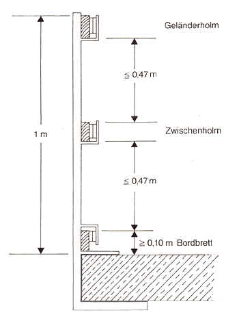
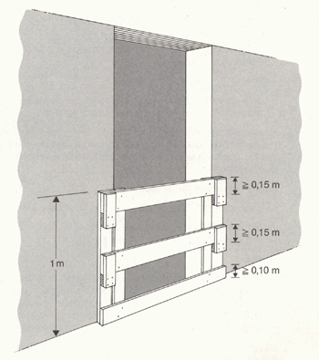

6 |
Anforderungen an Seitenschutz |
| 6.1 | Allgemeines |
| 6.1.1 | Der Seitenschutz muss aus Geländerholm, Zwischenholm und Bordbrett bestehen. |
| 6.1.2 | Die Oberkante des Seitenschutzes muss mindestens 1 m über der Aufstellfläche liegen. Der Abstand zwischen Geländer- und Zwischenholm bzw. Zwischenholm und Bordbrett darf nicht größer als 0,47 m sein (siehe Bild 1). |

| Bild 1: | Maße des Seitenschutzes |
| 6.1.3 | Die Oberkante des Bordbrettes muss mindestens 0,15 m über der Aufstellfläche liegen. Der Abstand vom Bordbrett zur Aufstellfläche und vom Bordbrett zu seitlich anschließenden Konstruktionsteilen darf 20 mm nicht überschreiten. |
| 6.1.4 | Abweichend von Abschnitt 6.1.1 darf auf das Bordbrett im Seitenschutz verzichtet werden, |
| 6.1.5 | Abweichend von Abschnitt 6.1.1 darf der Seitenschutz an Ladestellen von betretbaren Lastaufnahmemitteln von Bauaufzügen nur während des Be- und Entladens in der Breite des Lastaufnahmemittels geöffnet werden können. |
| 6.2 | Regelausführung für Seitenschutz |
| 6.2.1 | Als Geländer- und Zwischenholm müssen verwendet werden: |
| 6.2.2 | Bordbretter müssen mindestens 3,0 cm dick sein. Die Oberkante muss 0,15 m über der Belagfläche liegen. |
| 6.2.3 | Die Bauteile des Seitenschutzes müssen in eingebautem Zustand gegen unbeabsichtigtes Lösen gesichert sein. |
Gegen unbeabsichtigtes Lösen sind Seitenschutzteile z.B. gesichert, wenn

| Bild 2: | Beispiel für einen Seitenschutz vor einer Wandöffnung |